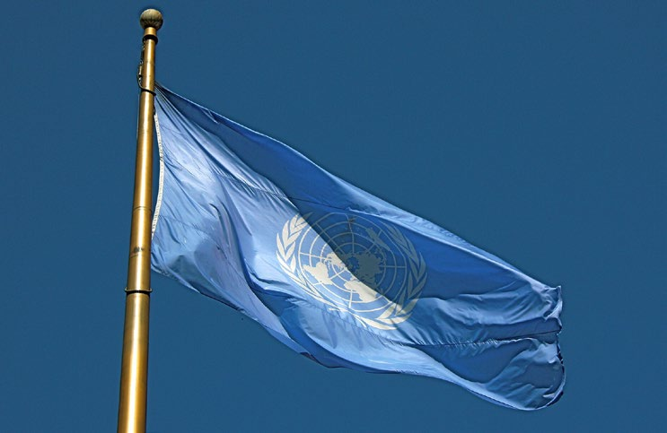
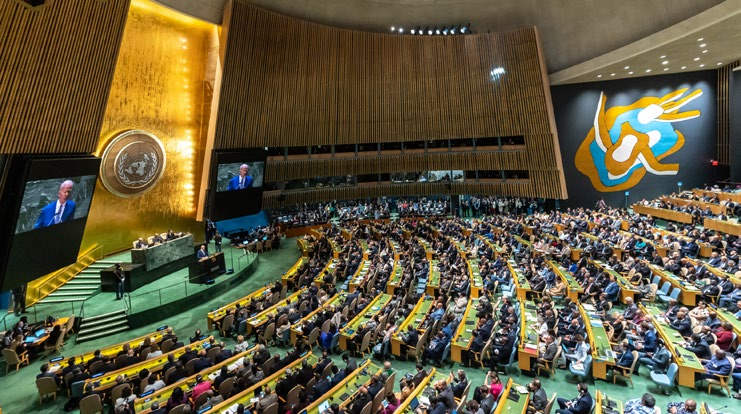
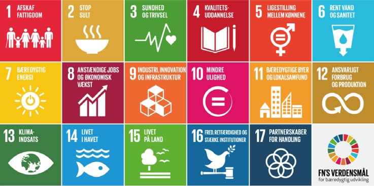
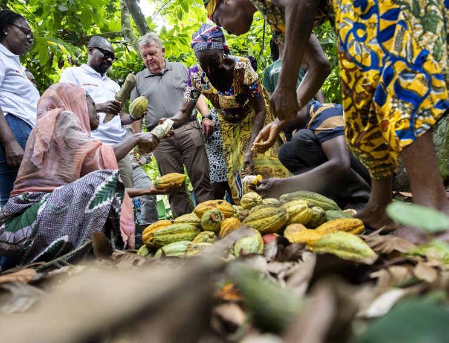

4.3 – DANMARKS GLOBALE SAMARBEJDE
sidde 131
Samarbejde
De internationale forbindelser stopper ikke ved Europa. Danmark er også medlem af mange organisationer, der beskæftiger sig med større regionale eller globale spørgsmål. En af de vigtigste er FN. Danmark har også et stort samarbejde om udvikling med en række udviklingslande i blandt andet Afrika, Latinamerika og Asien.
FN (DE FORENEDE NATIONER)
FN (De Forenede Nationer) er en verdensomspændende organisation, som består af selvstændige stater. FN blev grundlagt i 1945 kort efter afslutningen af 2. Verdenskrig. FN fik fra begyndelsen tilslutning fra 51 stater. I dag er medlems tallet 193. Danmark har været medlem af FN siden stiftelsen i 1945.
FN’s vigtigste opgaver ligger inden for fred og sikkerhed, menneskerettigheder, udviklingsaktiviteter samt humanitære indsatser. Spørgsmål som konflikter, økonomi, fattigdom, sult, sygdomme og miljø er derfor centrale for FN’s arbejde. Desuden arbejder FN med børns vilkår, kvinders rettigheder, kultur og uddan nelse. FN’s hovedkvarter ligger i New York, men nogle af dets underorganisa tioner har hovedsæde andre steder i verden, blandt andet i Geneve, Nairobi og Wien. Den øverste leder i FN er FN’s generalsekretær. FN-fl
FN-flaget.
Læremateriale Til Indfødsretsprøven

sidde 132
USA's daværende præsident Joe Biden (f. 1942) taler til FN's Generalforsamling i 2023. Foto: Ron Przysucha.
USA's daværende præsident Joe Biden (f. 1942) taler til FN's Generalforsamling i 2023. Foto: Ron Przysucha.
FN afholder en årlig Generalforsamling, som finder sted i FN’s hovedkvarter i New York. Generalforsamlingen har mange formål, herunder at diskutere aktu elle sager i FN’s medlemslande, at vedtage budgettet for FN og at diskutere rapporter fra FN’s Sikkerhedsråd.
Hovedopgaven i FN’s Sikkerhedsråd er at behandle konflikter, der kan true den internationale fred og sikkerhed. Sikkerhedsrådet har fem faste (permanente) medlemmer. Det er Rusland, Kina, Storbritannien, USA og Frankrig, som var de fem vigtigste lande, som var med til at vinde 2. Verdenskrig. En tanke bag denne sammensætning var således også, at krige og konflikter kunne undgås ved dialog og samarbejde mellem de daværende fem mest betydningsfylde magter.
Sikkerhedsrådet har ti øvrige medlemslande. De bliver udvalgt af Generalforsamlingen for to år ad gangen. Danmark er medlem af Sikkerhedsrådet i perioden 2025-26, og har tidligere været medlem i perioderne 1967-68, 1985-86 og 2005-06.
De fem faste medlemmer har vetoret. Det vil sige, at hvis blot ét af disse lande stemmer imod en beslutning, kan den ikke gennemføres. Da landene ofte har forskellige og modstridende interesser, er det ofte svært at vedtage betyd ningsfulde beslutninger. Siden 1946 har vetoretten været brugt 329 gange, flest gange af Sovjetunionen/Rusland og USA.
For eksempel har Rusland de senere år brugt sin vetoret til at blokere for, at Sikkerhedsrådet fordømmer Ruslands invasion af Ukraine. Og USA har – på grund af sit tætte forhold til Israel – blandt andet brugt sin vetoret til at forhindre, at FN fordømmer nye israelske bosættelser i de palæstinensiske områder.
En anden kritik af FN-systemet er, at den globale magtbalance har ændret sig siden 1945, fordi nogle af Sikkerhedsrådets faste medlemmer har mistet magt
Læremateriale Til Indfødsretsprøven

sidde 133
og betydning i mellemtiden. USA regnes stadigvæk som verdens stærkeste magt og Kina som den næst-stærkeste. Men mange vil mene, at Sikkerhedsrådets tre europæiske medlemmer – Rusland, Frankrig og Storbritannien – ikke længere er globale stormagter. Derudover er for eksempel hverken Indien med verdens største befolkning eller nogen lande fra Afrika eller Sydamerika repræsenteret blandt de faste medlemmer.
Fn-Byen I København
I København ligger den såkaldte FN-by, hvor flere end 1.500 personer med mere end 100 forskellige nationaliteter arbejder. FN-byen huser 11 FN-organisa tioner, herunder Verdenssundhedsorganisationen (WHO), FN’s Flygtningehøj kommissariat (UNHCR) og FN’s organisation til at hjælpe børn (UNICEF). UNICEF’s Verdenslager i København indeholder blandt andet medicinske forsyninger, skoleredskaber, produkter til at omdanne beskidt vand til drikkevand og meget mere, som bliver sendt ud til millioner af børn over hele verden.
Fn’S 17 Verdensmål
FN’s medlemslande vedtog ved et topmøde i New York i september 2015 de nye verdensmål for bæredygtig udvikling, der danner rammen for den globale udviklingsindsats frem til år 2030. De 17 verdensmål gælder for alle verdens lande – og dermed også Danmark.
De 17 verdensmål er meget ambitiøse og spænder bredt. Ud over fattigdomsbe kæmpelse og social udvikling har verdensmålene også fokus på økonomisk og miljømæssig udvikling, ligestilling, klima og inkluderer mål for fred og sikkerhed. Med verdensmålene har FN’s medlemslande således blandt andet forpligtet sig til at afskaffe ekstrem fattigdom, sikre uddannelse til alle, bedre sundhed, anstændige jobs og bæredygtig vækst i alle lande.FN’s 17 verdensmål. Mål 1: Afskaf fattigdom. Mål 2: Stop sult. Mål 3: Sundhed og trivsel. Mål 4: Kvalitetsuddannelse. Mål 5: Ligestilling mellem kønnene. Mål 6: Rent vand og sanitet. Mål 7: Bæredygtig energi. Mål 8: Anstændige jobs og økonomisk vækst. Mål 9: Industri, innovation og infrastruktur. Mål 10: Mindre ulighed.
FN’s 17 verdensmål.
Læremateriale Til Indfødsretsprøven

sidde 134
INTERNATIONALT SAMARBEJDE OM UDVIKLING
Danmark yder økonomisk støtte til mange af verdens fattigste lande. Denne støtte kaldes internationalt udviklingssamarbejde. Danmark er et ud af få lande i verden, som opfylder FN’s målsætning om, at lande skal give 0,7 procent af bruttonationalindkomsten (BNI) i udviklingsbistand. I 2026 svarer det til cirka 23 milliarder kroner.
Målsætningerne med den danske bistand er for eksempel at bekæmpe fattigdom, skabe jobs, handel og investeringer, hjælpe med den grønne omstil ling, bekæmpe korruption, fremme demokrati og menneskerettigheder samt kvinders og pigers rettigheder.
Noget af den danske udviklingsbistand gives som direkte bistand til udviklings landene. Danmark giver for eksempel penge direkte til udviklingslandene, til humanitært arbejde og til det arbejde, civilsamfundsorganisationer udfører. Danmark giver derudover bistand i form af bidrag til internationale organisa tioner såsom EU, FN og Verdensbanken. En del af pengene i 2026 gives også til at hjælpe Ukraine med humanitær hjælp og genopbygning af landet.
Siden 1971 har Danida været ansvarlig for den danske udviklingspolitik. Danida er en selvstændig afdeling under Udenrigsministeriet. På de danske ambas sader og repræsentationer i udlandet sidder både lokale og danske udsendte medarbejdere, som håndterer udviklingssamarbejdet med det enkelte land.
Fokus På Afrika
Afrika er den verdensdel, der historisk har haft størst fokus i dansk udviklings politik, og som har modtaget størstedelen af dansk udviklingsbistand.
Det hænger blandt andet sammen med, at Afrika er nabo til Europa, og at det, der sker i Afrika, kan have stor betydning for Europa (og dermed for Danmark). Der er stor forskel mellem de 54 afrikanske lande, men samlet set er Afrika verdens fattigste kontinent, og flere steder er der borgerkrige og andre konflikter.
Og befolkningen vokser hurtigt og med det også Afrikas betydning. Afrikas befolkningstal er næsten fordoblet de sidste 25 år fra 835 mio. i 2001 til 1,6 mia. i 2026. Frem mod 2050 ventes ifølge FN en yderligere befolkningstilvækst på næsten 1 mia. til i alt 2,5 mia. Det skaber på den ene side mulighed for mere økonomisk vækst, mere samhandel og flere investeringer, men øger også risiko for større problemer med klimaforandringer og fattigdom, som også kan føre til, at flere flygter eller migrerer – og nogle mod Europa via de livsfarlige ruter over Middelhavet. Der blev i 2024 registreret cirka 130.000 ulovlige ankomster fra Afrika til Europa.
Læremateriale Til Indfødsretsprøven
sidde 135
Den gennemsnitlige afrikaner udleder langt færre af de drivhusgasser, som er hovedårsagen til klimaforandringerne end for eksempel den gennemsnitlige amerikaners, kinesers eller europæers. Men Afrikas udledning ventes at vokse de kommende årtier. Og i alle tilfælde er det i Afrika, at man mærker nogle af de værste konsekvenser af klimaforandringerne i form af for eksempel oversvøm melser, ekstrem varme, misvækst i landbruget og flere områder med ørken.
Et tættere samarbejde mellem de europæiske og afrikanske lande skal derfor blandt andet sikre, at Europa bliver den foretrukne partner og ikke mister poli tisk indflydelse.
Den danske regering har i 2024 fremlagt en ny og samlet 'Strategi for et styrket dansk engagement med de afrikanske lande'. Den lægger op til, at Danmark engagerer sig mere i Afrika og fokuserer også på at skabe ligeværdige partner skaber med de afrikanske lande. Med strategien fortsættes støtten, samtidig med at der rettes fokus på fred og sikkerhed, kampen mod klimaforandringer og bedre muligheder for investeringer i afrikanske lande, økonomisk vækst og mere samhandel med danske virksomheder. Andre formål er også at skabe mere udveksling af kultur og uddannelse og reducere antallet af ulovlige migranter mod Europa.Tidligere minister for udviklingsbistand Christian Friis Bach besøger et dansk støttet projekt, der giver mad til fattige i Somalia. Foto: Peter Hove Olesen/Ritzau Scanpix.
Udenrigsminister Lars Løkke Rasmussen besøger en kakao-plantage i Ghana. Foto: Finn Frandsen/Ritzau Scanpix.
Læremateriale Til Indfødsretsprøven

Fonte: Læremateriale til Indfødsretsprøven, SIRI.